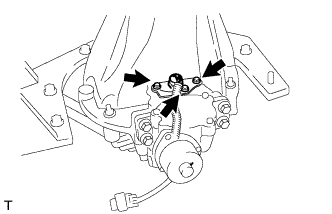

REAR DIFFERENTIAL LOCK ACTUATOR (w/ Differential Lock) > INSTALLATION |
| 1. INSTALL DIFFERENTIAL LOCK SHIFT ACTUATOR |
Remove any old FIPG material.
Clean the contact surfaces of any residual FIPG material using non-residue solvent.
 |
Apply seal packing to the actuator.
 |
Install the shift fork and actuator to the differential and align the shift fork hole with the shift lock.
Clean the threads of the set bolt and fork shaft with non-residue solvent.
 |
Coat the threads of the set bolt with adhesive.
Install the shift fork shaft set bolt.
Engage the sleeve with the dog clutch of the differential case.
 |
Install the 4 bolts.
| 2. INSTALL REAR DIFFERENTIAL LOCK COVER WITH POSITION SWITCH |
Remove any old FIPG material.
Clean the contact surfaces of any residual FIPG material using non-residue solvent.
 |
Apply seal packing to the cover.
 |
Install the cover with the 3 bolts.
| 3. INSTALL REAR DIFFERENTIAL LOCK ACTUATOR PROTECTOR |
 |
Install the protector with the 2 nuts.
| 4. INSTALL DIFFERENTIAL PROTECTOR ASSEMBLY |
 |
Attach the protector with the bolt and nut.
Connect the 2 connector clamps and wire harness clamp.